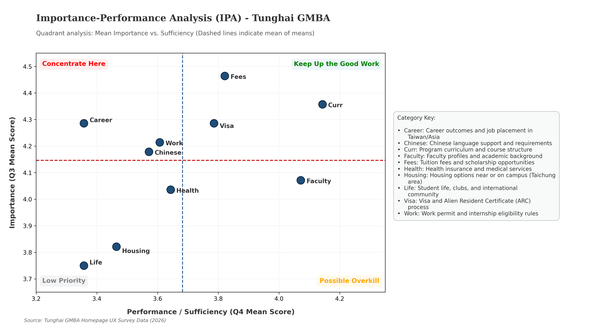
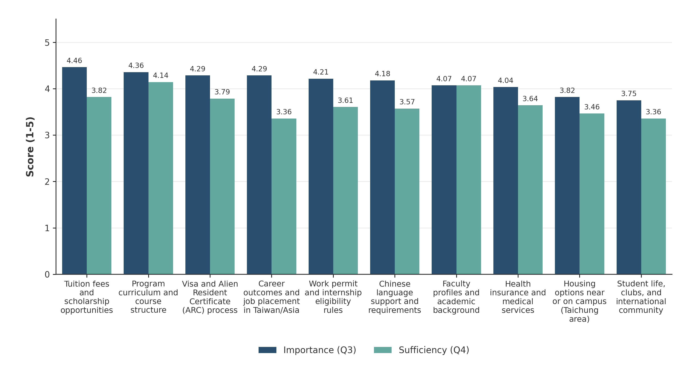
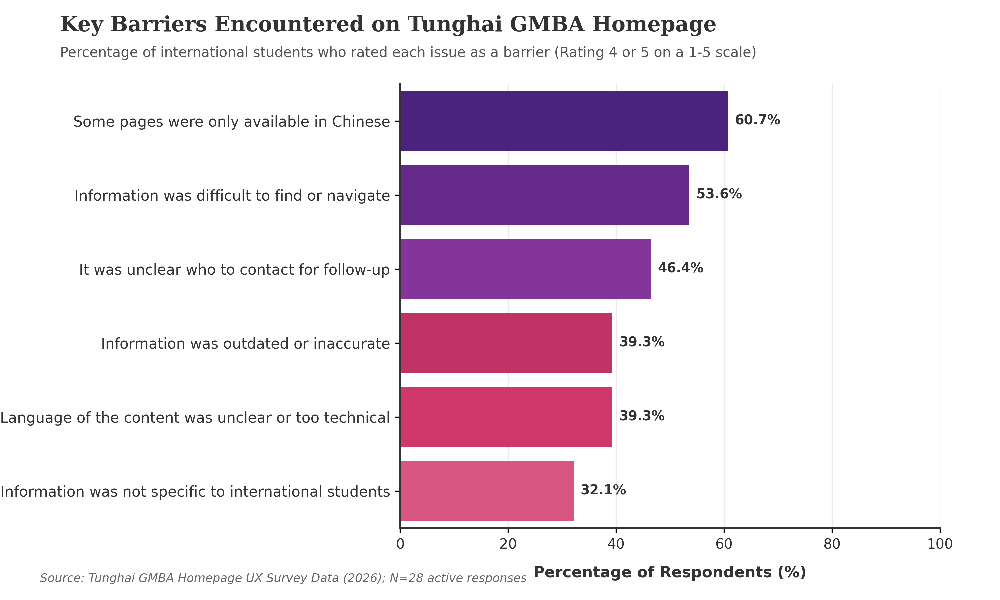
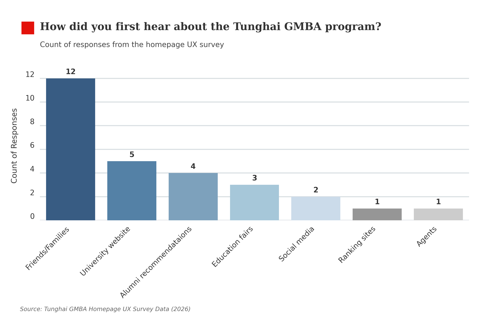
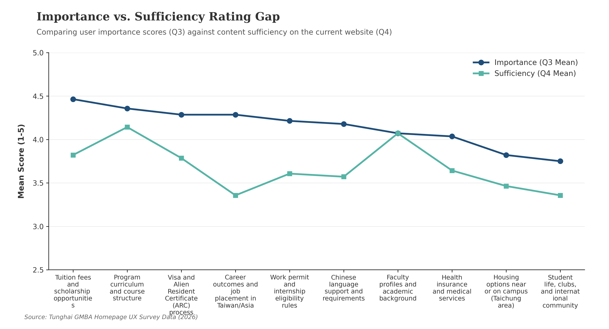

Satisfaction & Preferences
An interactive web dashboard displaying survey metrics. The left panel houses a utility rating gauge (averaging 3.57/5.0), and the right panel breaks down document formats.
IPA Quadrant Plot
Maps student expectation values against content sufficiency across 10 homepage categories. Splitting data into priority quadrants to guide resource allocation.

Grouped Divergence Chart
A vertical grouped comparison chart plotting average importance scores against website content completeness, sorted by importance level.

Usability Barriers Gradient
A sorted horizontal chart visualizing specific layout navigation and language barriers experienced by international GMBA portal users.

Discovery Referral Channels
Adhering to strict editorial design guidelines, this frequency chart catalogs gmba program recruitment discovery sources.

UX Ratings Gap Slope Plot
A line chart showcasing rating gaps between expectation and current website completeness, utilizing custom markers and clean layouts.
